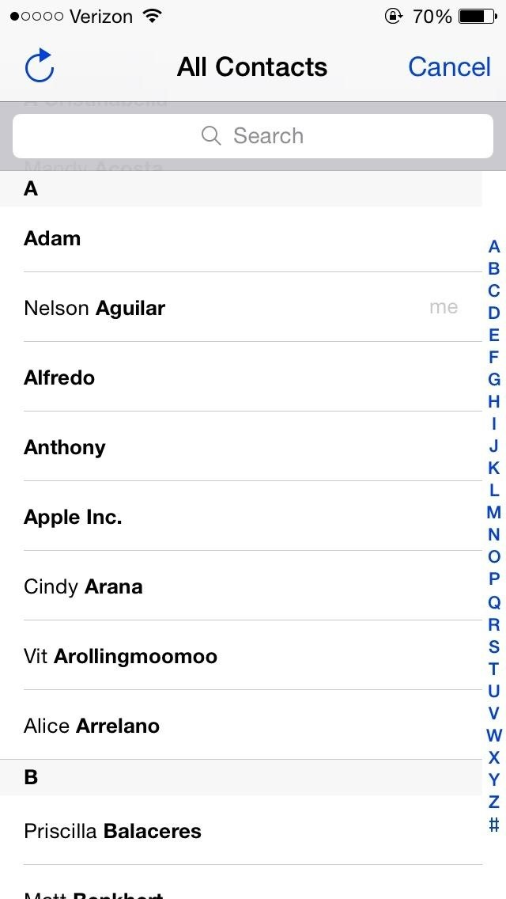

<p id="info"> Challenge: Use the home button to return to the main screen of your phone"</p>

<div class="smartphone">
  <div class="content">
  
  </div>
  <button id="home-btn" (click) = "goHome()"> </button>
</div>

<button id="next-btn" (click) = "nextActivity()"> Next Activity</button>